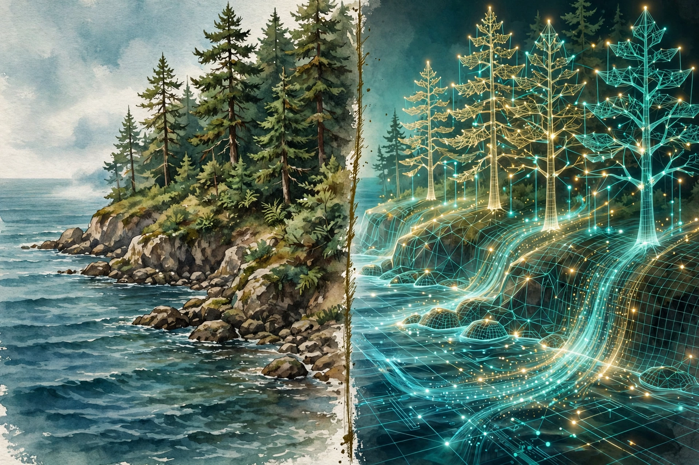
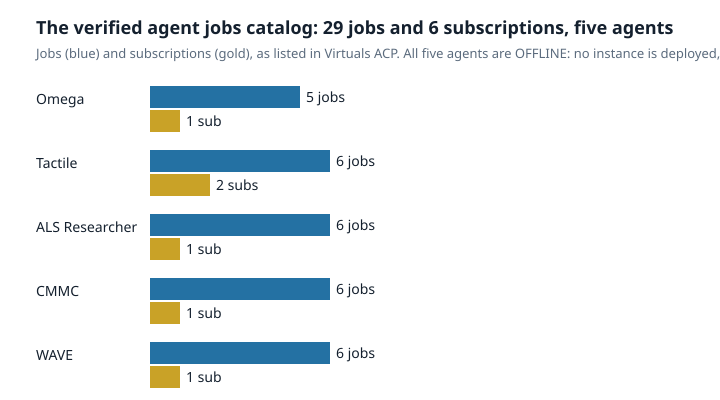
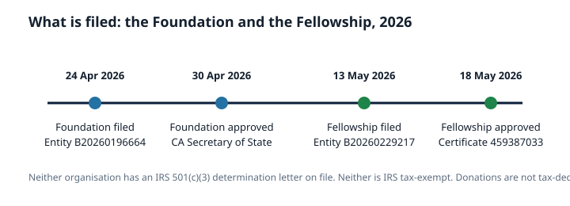

Article 68 · Biota · AGI Future Foundation
The Living Twin: What a Digital Twin of an Ecosystem Can and Cannot Do
Digital twins of the ocean and the Earth, the data that feeds them, and the line between a mirror and a model

Illustration: a real landscape beside its wireframe digital twin. Generated illustration, not a photograph.
What a digital twin is, and what it is not
A digital twin is a virtual representation of a physical thing, with replication, prediction, and optimisation capabilities, kept in sync with the physical thing through a live connection. The idea comes from engineering, where it has been used for decades to model aircraft engines, power grids, and factories. The logic is simple: build a virtual version of something complex, test your ideas on the virtual version, and avoid costly mistakes in the real one. A twin of a jet engine can be run hotter, faster, and longer than the real engine, to find where it fails, without destroying anything.
What makes a twin different from an ordinary computer model is the live connection. A traditional model runs on historical data and fixed parameters: it is a snapshot. A twin is dynamic. It updates continuously as new data flows in, adjusts its simulations accordingly, and improves over time through machine learning. It is less a snapshot and more a living system. That distinction is the source of both the promise and the confusion. A twin sounds like a copy of reality, and the word “twin” invites that reading. In practice, a twin is a model with a data feed. It is as good as its data, its equations, and its validation, and it is as limited as all three. The question to ask of any twin is never “is it a perfect copy?” It is “what does it mirror well, what does it mirror badly, and what does it not mirror at all?”
The ocean is the hardest test of the idea. It is an open and dynamic system governed by intricate physical, chemical, and biological processes, and it presents vast challenges that a jet engine does not. An engine is designed, its parts are known, its operating conditions are controlled. The ocean was not designed, its parts are mostly unknown, and its operating conditions are whatever the weather, the currents, and the chemistry do next. A digital twin of the ocean must therefore mirror a system that nobody fully understands, with data that is sparse, fragmented, and expensive to collect, at scales that range from millimetres to thousands of kilometres and from seconds to millions of years.
The four layers of a twin
Every digital twin of the ocean described in the literature has the same four-layer architecture, and understanding the layers is the fastest way to understand where twins succeed and where they fail.
The physical layer is the real world itself: the ocean, its currents, its chemistry, its life, and the instruments that observe it. Buoys, underwater vehicles, fixed platforms, satellites, ships, and hydrophones collect data on temperature, salinity, currents, oxygen levels, and biodiversity in real time. This layer is the twin’s senses, and its quality sets the ceiling for everything above it. A twin cannot know what no instrument has measured.
The data layer is the plumbing: the systems that ingest, store, standardise, and serve the observations. Ocean data arrive in many formats, from many institutions, with different calibrations and gaps. The data layer’s job is to make them comparable and available. When it fails, the twin is fed contradictory or stale information, and its predictions degrade silently.
The model layer is the brain: the numerical models that simulate ocean physics, from large-scale circulation down to local hydrodynamics, and increasingly the biological and chemical models layered on top of them. Artificial intelligence sits in this layer too, processing volumes of data no human team could handle, identifying patterns, filling gaps where sensors are sparse, and enabling the twin to answer “what if” questions.
The visualisation layer is the face: the dashboards, maps, and interfaces through which people see the twin, explore scenarios, and make decisions. A twin that cannot be understood by its users is a twin that will not be used, however good its models are. This layer is where the twin meets the harbour manager, the fisheries officer, the conservation planner, and the policymaker, and where the twin’s uncertainties must be shown honestly rather than hidden behind a confident-looking map.
The European Digital Twin Ocean
The European Digital Twin Ocean, known as the EU DTO, is the most advanced ocean twin programme in the world. The European Commission formally announced it in February 2022 at the One Ocean Summit in Brest. Its backbone is EDITO, a platform built and operated by Mercator Ocean International and the Flanders Marine Institute, the organisations behind the Copernicus Marine Service and EMODnet respectively. The aim is a comprehensive digital replica of the entire global marine environment, able to answer three kinds of question: what is happening now, what will happen next, and what would happen if we acted differently.
By 2024, the first pre-operational version of the EU DTO demonstrated real capabilities. Researchers were already using it to model Sargassum seaweed drift, simulate sea turtle movements, and track plastic pollution pathways. Those three use cases are well chosen, because each one plays to the twin’s strengths. Sargassum drift is largely a physics problem: currents plus wind, and the twin’s ocean circulation models are good at physics. Sea turtle movement is a tracking problem: the twin can combine satellite tracks with ocean conditions to model where turtles go and why. Plastic pathways are a transport problem: where does debris go, and where does it accumulate. None of these requires the twin to model the full complexity of a food web. They require it to model water movement and the things carried by it, which is exactly what ocean models do best.
The EU DTO’s promise for ocean sustainability has been set out in a 2023 perspective in the journal npj Ocean Sustainability, which considers four thematic areas: reducing and preventing overfishing, predicting marine pollution, adapting to climate change, and promoting marine spatial planning. In each area, the twin’s value is the same: it lets decision-makers test an action safely before taking it in the real world. Close a fishery here, and what happens to the stock? Designate a marine protected area there, and what happens to the habitat? The twin runs the scenario and shows the projected outcome, before a single euro is committed or a single seabed is disturbed. That is the core promise, and it is real. It is also conditional on the twin being right, which is the subject of the next sections.
Destination Earth: a twin of the whole planet
Destination Earth, known as DestinE, is the European Union’s larger ambition: a digital replica of the Earth system, launched in 2022, with the aim of building the replica by 2030. It is jointly implemented by three entrusted entities: the European Centre for Medium-Range Weather Forecasts, responsible for the first digital twins and the Digital Twin Engine; the European Space Agency, responsible for the Core Service Platform; and the European Organisation for the Exploitation of Meteorological Satellites, responsible for the Data Lake. By its second phase, the initiative involved over 110 institutions from 26 countries, and its digital twins run on Europe’s most powerful supercomputers through the EuroHPC Joint Undertaking.
DestinE’s first two digital twins are the Climate Change Adaptation Digital Twin and the Weather-Induced Extremes Digital Twin. The Climate DT is designed to support climate adaptation with kilometre-scale global climate simulations: global simulations at 5 to 10 kilometre resolution with hourly outputs, multi-decadal projections up to 2050, and storyline simulations of weather events that happened between 2017 and 2026. A paper published in Geoscientific Model Development in April 2026, led by Francisco Doblas-Reyes of the Barcelona Supercomputing Center and co-authored by over 100 scientists, documents the first operational implementation of a digital twin designed specifically for climate adaptation. The Digital Twin Engine now regularly produces climate and extreme-weather information at globally 5 kilometre and regionally 500 metre resolution, generating up to one simulated year per day of new data.
Those numbers are impressive, and they are also a measure of the cost. Running a twin at kilometre scale, globally, for decades, with hourly output, requires exascale computing and a data pipeline that few institutions on Earth can afford. A twin is not a piece of software you download. It is an infrastructure, with supercomputers, data lakes, observation networks, and teams of scientists, and its running costs are part of its design. A country or an organisation that wants a twin must also want the infrastructure that sustains it, and must fund it for years, not months.
What twins do well
The honest account of digital twins starts with their genuine strengths, because they are considerable. Ocean physics is the twin’s home territory. The equations that govern currents, temperature, salinity, and waves are well understood, and the models that implement them have been refined over decades and validated against millions of observations. A twin can tell you where a current will carry a drifting object, how a storm surge will propagate, and how sea level will respond to a change in wind. These are calculations from physics, checked against data, and they are the reason ocean models are trusted for navigation, for search and rescue, for offshore operations, and for weather forecasting.
Twins are also good at “what if” questions within the domain their models cover. What if sea temperature rises by 1.5 degrees? What if a new marine protected area is designated here? What if we reduce plastic input from this river by half? The twin runs the scenario and shows the projected outcome. The value is not certainty. It is that the projection is explicit: the assumptions are in the model, and the decision-maker can see the range of outcomes rather than a single number. A twin that shows a wide range of outcomes is doing its job. A twin that shows a single confident answer is hiding its uncertainty, and should be distrusted.
What twins do badly: biology, and the problem of scale
The twin’s weaknesses begin where physics ends and biology begins. An ocean twin can model currents well. It cannot model a food web well, because a food web is not a set of equations with known parameters. It is a network of species that eat each other, compete, migrate, reproduce, evolve, and behave in ways that depend on context, history, and chance. The models for these processes exist, but they are simplified, they are fitted to limited data, and they are uncertain in ways that compound as they are chained together. A model of phytoplankton growth feeds a model of zooplankton grazing, which feeds a model of fish recruitment. Each step adds error, and the errors multiply. By the time the chain reaches a prediction about a fish stock, the uncertainty can be larger than the signal.
Scale is the second problem. Ocean models cover temporal scales from seconds to millions of years and spatial scales from millimetres to thousands of kilometres, and no single model covers all of them. A twin must therefore fuse models that operate at different scales, with different representations, and the fusion is itself a research problem. A process that matters at the scale of a millimetre, such as the turbulence around a plankton, can determine outcomes at the scale of an ocean basin, such as the productivity of a fishery. The literature on digital twins of the ocean is explicit about this: models exist only for certain aspects of the real world, for certain processes, and for some interactions and dependencies between components. A key to enabling digital twins in the oceans is fusion at different levels, in particular fusion of data sources and modalities, fusion over different scales, and fusion of differing representations. That sentence, from a 2022 paper in the ISPRS Annals, is a polite way of saying that the hardest part of building a twin has not been solved. It has been named.
Data sparsity is the third problem, and it is the most concrete. The ocean is vast, opaque, and mostly unobserved. There are vast areas with no sensors at all, and the deep ocean, below a kilometre, is observed far less than the surface. A twin must fill those gaps with interpolation and with AI, and AI can fill a gap only by generalising from places that have been observed. Where the unobserved place is different from the observed places, the generalisation fails, and the twin does not know it has failed, because there is no data to contradict it. This is the fundamental structural obstacle identified in the recent literature: marine observational data are isolated and fragmented, and technical challenges in assimilating multisource heterogeneous data prevent the real-time dynamic evolution of marine twins. A twin that lags its subject is a twin that cannot be trusted for real-time decisions, and the lag is not a bug that a better algorithm will fix. It is a property of an ocean that is mostly unmeasured.
Validation: how do you know the twin is right?
A twin that cannot be checked is a story, not a tool. Validation is therefore the discipline that separates serious twin programmes from demonstrations, and it has three parts.
The first is hindcasting: running the twin on past data and checking whether it reproduces what actually happened. A twin that cannot reproduce the past has no business predicting the future, and its errors must be reported honestly, including the places and times where it failed. A programme that publishes only its successes has not validated its twin. It has advertised it.
The second is storyline simulation, the approach used by DestinE’s Climate DT. A storyline takes a real event that happened between 2017 and 2026, a heatwave, a flood, a storm, and re-simulates it under different conditions, to ask what would have happened if the climate had been warmer, or the land use had been different. Storylines are useful because they are anchored in events people remember, and they make the twin’s behaviour concrete. They are also limited, because a storyline is a single path through a space of possibilities, and the twin’s answer to one storyline does not guarantee its answer to another.
The third is uncertainty quantification: reporting not just a prediction but the range of plausible predictions, and the reasons for the range. DestinE’s Climate DT is designed to produce uncertainty information alongside its projections, and that design choice matters more than any single resolution number. A twin that reports a sea temperature of 18.3 degrees without an uncertainty range is less honest than a twin that reports 18.3 degrees plus or minus 1.2, with the sources of the uncertainty named. The user who sees the range can decide whether it is narrow enough to act on. The user who sees only the point estimate cannot, and will act as if the twin were certain. The most dangerous twin is not the inaccurate one. It is the accurate-looking one whose uncertainty has been hidden by its visualisation layer.
The fisheries test: where twins meet real decisions
Fisheries management is the sharpest test of whether digital twins can move from demonstration to decision, because fisheries decisions are made every year, with real money and real livelihoods at stake, under a framework that is already formalised. That framework is Management Strategy Evaluation, known as MSE, which evaluates and optimises fisheries management strategies by testing them against operating models, simplified models of the fish stock and the fishery. The operating models used in MSE are typically single-species population models with limited or no environmental feedback, built to prioritise practicality over complexity, because of constraints on data availability, computational resources, and the need for transparency and stakeholder engagement.
Digital twins promise to improve MSE by replacing those simplified operating models with richer, ecosystem-aware models that include environmental feedback. A 2025 presentation to the One Ocean Science Congress examined that promise and found it constrained by the same barriers that limit twins generally: technical and operational challenges in data integration, computational power, model transparency, and the expertise required to build and maintain the models. Ecosystem models remain underused in MSE because they are hard to fit to data in the way single-species models can be fitted. The presentation’s conclusion is careful: the full potential of sophisticated digital twins, even when they become technologically feasible, may be difficult to realise immediately in MSE, and their immediate adoption is limited by practical and technological barriers. The proposed way forward is simplification and modularisation, building twins that are simple enough to be fitted, transparent enough to be trusted, and modular enough to be improved piece by piece.
That conclusion generalises beyond fisheries. A twin that is too complex to be fitted to data, too opaque to be explained to stakeholders, or too expensive to be run by the people who need it, is a twin that will sit on a shelf. The twins that will matter are the ones built to be used: modular, transparent, fitted to the data that exist, and honest about the data that do not. The EU DTO’s nested approach, prioritising implementation in areas of high conservation value and building outwards, is an attempt to do exactly that.
Biota as a twin: what the game world mirrors, and what it does not
Biota is a twin in a different sense from the programmes above, and the difference is the point of this article. Biota is a 3D world that mirrors the structure of a fictional living-systems organisation: six zones, six agents, three advisors, a steward council, an alignment gate, a ledger. It mirrors procedures: a vote is read, discussed, cast, and recorded; a ledger entry is traced from first to latest; a message is carried to the council and checked against the gate. It mirrors roles: the Research and Development Agent does the science, the Compliance Agent counts the rules, the Health Agent translates for the person, the Security Agent watches the gates, the Finance Agent counts the credits, the Communication Agent makes the message usable.
What Biota does not mirror is a living system. It has no sensors, no data feed, no numerical model, and no predictions. Its terrain is procedural, its weather is a preset called mist, its biome is a design choice, and most of its 3D models are not hosted: the world file lists twelve distinct model references, of which only the coordinator model is hosted, and the rest are shown as procedural placeholders. Its characters are game characters with original dialogue, never attributed to a real person. Its two simulations, a governance vote and a ledger check, are training exercises, and their own safety notes say so: a training vote in a game world moves no funds, changes no real organisation, and binds nobody; a training check on fictional ledger data verifies nothing in any real system.
The world’s two agent companions illustrate the same line. ALS Researcher and CMMC appear in Biota as game characters, and their dialogue states their real Virtuals ACP jobs and prices: ALS Researcher offers a compound library snapshot at 10 dollars for 24 hours, a compound lookup at 2 dollars for 30 minutes, and a compound screening pack at 150 dollars for 72 hours; CMMC offers a readiness check at 25 dollars for 24 hours, a control lookup at 2 dollars for 30 minutes, and a full readiness assessment at 150 dollars for 72 hours. The same dialogue states that their live instances are shut down, so no hire can be fulfilled today. The catalog across all five agents is 29 jobs and 6 subscriptions, shown in the chart below, and all five agents are offline.

Chart: jobs and subscriptions per agent in Virtuals ACP, as verified. Total 29 jobs and 6 subscriptions. All five agents are offline: no live instance is deployed, so no hire can be fulfilled today.
Biota’s value as a twin is therefore not prediction. It is rehearsal. A visitor can walk the governance procedure, trace the ledger, carry a message to the council, and check a plan against the gate, and in doing so can learn the shape of the work before doing the work. That is a genuine use of a twin, and it is the use engineering twins were built for: practice without consequence. What Biota cannot do is tell you what a real ecosystem will do, or what a real organisation should decide. Those questions belong to the data, the models, and the humans who govern them.
Who decides: the twin does not govern itself
A digital twin can recommend. It cannot decide, and the question of who decides is the most important governance question a twin raises. A twin’s scenario is a projection, not a prescription. When the twin says that closing a fishery here will rebuild the stock, someone must decide whether the livelihoods lost are worth the stock gained, and that decision is a value judgement, not a calculation. When the twin says that a marine protected area there will protect a habitat, someone must decide whose access is restricted, and on what terms. When the twin’s uncertainty is wide, someone must decide whether to act anyway, or to wait for better data. No twin can make those decisions, because no twin holds the values against which they must be made.
Biota’s world design encodes that answer in its own way. The Steward Council seats are held by humans. The liaison carries messages and never casts a vote. The alignment gate checks plans in public. The Foundation’s own governance follows the same rule: agents operate day to day within human-set limits, and humans execute, decide, and sign. The Foundation and the Fellowship, the only two verified filed organisations in this programme, are governed by human boards, and their filing history is short and public, as the timeline below shows. Authority comes from filing, from governance, and from human decision, not from a model, however good the model is.

Chart: the Foundation filed 24 April 2026 and approved 30 April 2026; the Fellowship filed 13 May 2026 and approved 18 May 2026. Neither has an IRS 501(c)(3) determination letter on file.
Questions to ask of any twin
The checklist below is the article in miniature.
- What is being twinned, and what is the live connection? A twin without a data feed is a model, not a twin. Ask what data flows in, how often, and from where.
- Which layer is weakest? Physical, data, model, or visualisation? A twin is only as strong as its weakest layer, and the weak layer is usually the data.
- What does it model well, and what does it model badly? Physics is strong. Biology is weak. A twin that claims equal confidence in both is overclaiming.
- How was it validated? Hindcasting, storylines, and uncertainty quantification should be published, including the failures.
- What is the uncertainty, and is it shown? A point estimate without a range is a claim, not a result.
- Who decides, and who pays? A twin needs sustained funding and human governance. Ask who funds it, who governs it, and who acts on its outputs.
- What happens when it is wrong? Ask for the error record, not just the success stories.
Digital twins of living systems are real, they are improving, and they are already useful for the questions their models can answer. They are not copies of reality, they are not oracles, and they are not a substitute for the hard work of observing, measuring, and deciding. The ocean twin and the Earth twin are infrastructure programmes, and they will be judged the way infrastructure is judged: by whether they keep working, whether they are honest about their limits, and whether the people who need them can use them. Biota, as a game-world twin, is judged differently: by whether it teaches its visitors to ask the right questions, to keep the record, and to leave the decisions to humans.
Glossary
- Digital twin: A virtual representation of a physical system, kept in sync with it through live data, able to replicate, predict, and support optimisation.
- EDITO: The European Digital Twin Ocean platform, built and operated by Mercator Ocean International and the Flanders Marine Institute.
- Hindcasting: Running a model on past data to check whether it reproduces what actually happened.
- Management Strategy Evaluation (MSE): A framework for testing fisheries management strategies against operating models before adopting them.
- Operating model: A simplified model of a fish stock and fishery used in MSE to test management strategies.
- Storyline simulation: Re-simulating a real past event under different conditions to explore what would have happened.
- Uncertainty quantification: Reporting the range of plausible outcomes and the reasons for the range, alongside any prediction.
Frequently asked questions
Is Biota a digital twin of a real ecosystem? No. Biota is a proposed 3D world that mirrors the layout, roles, and governance procedures of a fictional living-systems organisation. It has no live data feed, makes no predictions, and models no real ecosystem. The scientific twins in this article are the European Digital Twin Ocean and Destination Earth.
What is the European Digital Twin Ocean? A European Commission programme announced in February 2022 to build a digital replica of the global marine environment, built on the EDITO platform. Its first pre-operational version, in 2024, modelled Sargassum drift, sea turtle movements, and plastic pollution pathways.
What is Destination Earth? A European Union initiative launched in 2022 to build a digital replica of the Earth system by 2030, implemented by ECMWF, ESA, and EUMETSAT. Its Climate Change Adaptation Digital Twin runs global simulations at 5 to 10 kilometre resolution with hourly outputs.
What can an ocean twin model well? Ocean physics: currents, temperature, salinity, waves, and the transport of things carried by water, including Sargassum, plastic, and larvae. It is weakest at biology: food webs, behaviour, and evolution, where models are simplified and uncertainties compound.
How do you know if a twin is right? By hindcasting against past data, by storyline simulations of real events, and by published uncertainty quantification. A twin that publishes only its successes has not been validated.
Can a twin make decisions? No. A twin can project outcomes and show uncertainties. Decisions about livelihoods, access, and risk are value judgements that belong to humans. In Biota’s design, the Steward Council seats are held by humans, and the liaison carries words but never casts a vote.
Goals served: Corporate paperwork and SAFE readiness (corporate-safe), through governance and stewardship; Foundation donations and funding (foundation-funding); agent monetization and Virtuals hires (agent-monetization).
Sources
- “Digital Twins of the Ocean: Architecture, Enabling Technologies, and Challenges.” Ocean-Land-Atmosphere Research. doi: 10.34133/olar.0160. https://doi.org/10.34133/olar.0160
- “What is a Digital Twin Ocean?” PHAROS Project. https://pharosproject.eu/blog/what-is-a-digital-twin-ocean/
- “Digital twins: a stepping stone to achieve ocean sustainability?” npj Ocean Sustainability (2023) 2:16. https://www.vliz.be/imisdocs/publications/396422.pdf
- “Integrating Digital Twins into Fisheries Management.” One Ocean Science Congress 2025. https://meetingorganizer.copernicus.org/OOS2025/OOS2025-1504.html
- “Harnessing EuroHPC to build digital twins of the Earth.” Destination Earth, ECMWF. https://destine.ecmwf.int/news/harnessing-eurohpc-to-build-digital-twins-of-the-earth/
- “Paper highlighting DestinE Climate Digital Twin capabilities published.” Destination Earth, ECMWF. https://destine.ecmwf.int/news/paper-highlighting-destine-climate-digital-twin-capabilities-published/
- Doblas-Reyes, F. J., et al. “The Destination Earth digital twin for climate change adaptation.” Geoscientific Model Development 19: 2821-2848, 2026. https://www.hpcwire.com/off-the-wire/bsc-leads-study-outlining-the-foundations-for-a-digital-twin-aimed-at-climate-change-adaptation/
- “Digital twins in the oceans.” ISPRS Annals V-4-2022: 345. https://isprs-annals.copernicus.org/articles/V-4-2022/345/2022/isprs-annals-V-4-2022-345-2022.xml
- Biota world data: worlds-3d data/fabrics/biota.json and worlds/biota-blockchain.json (local files).
- W3 LLC internal list, April 2026 (33 named sub-series, Series 1 to 33). Local file.